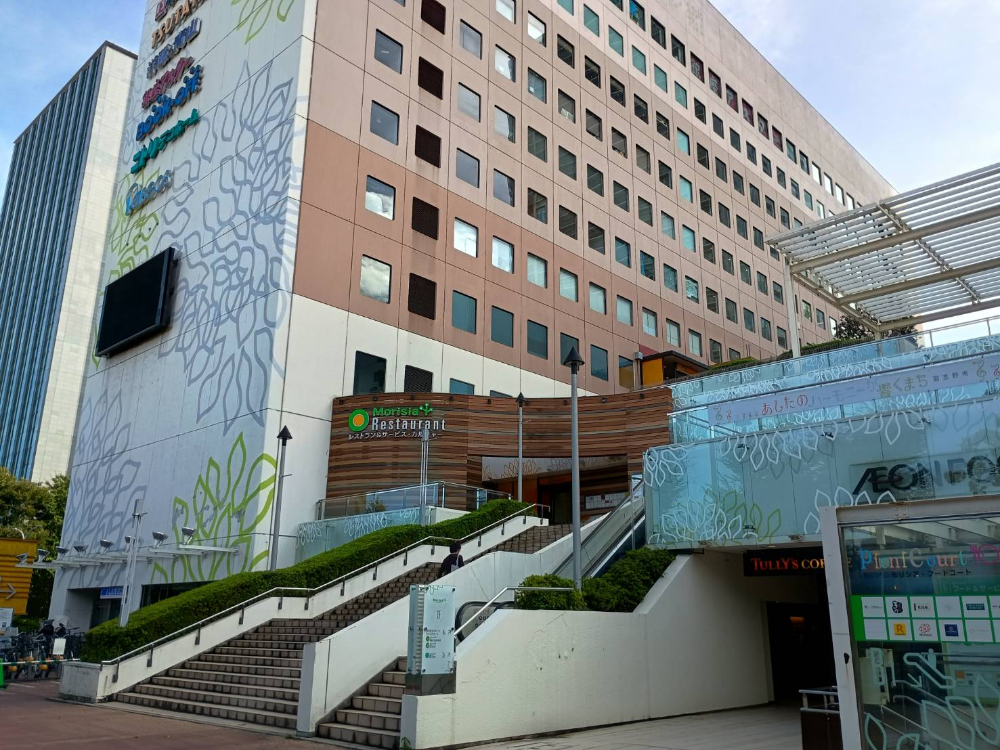
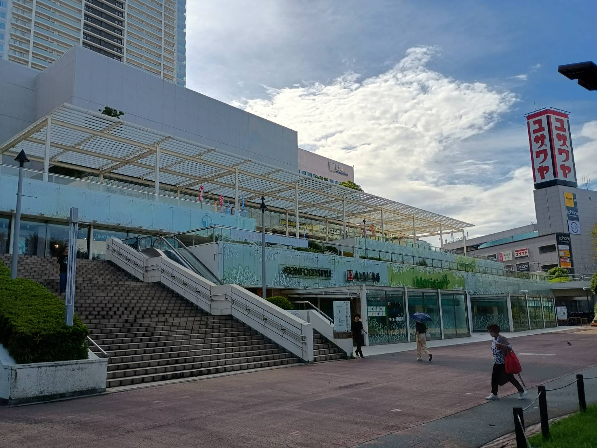
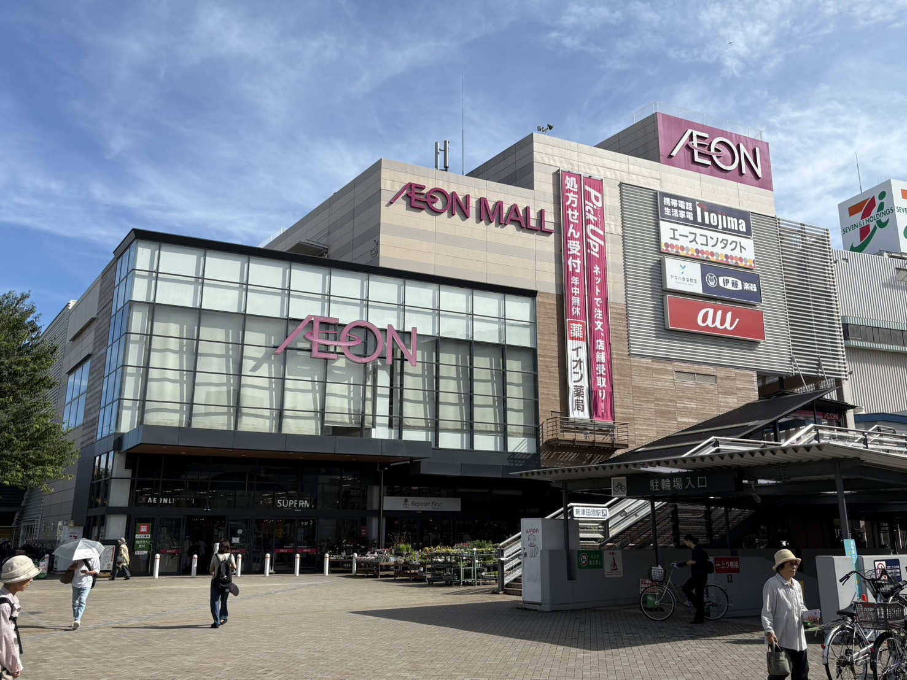
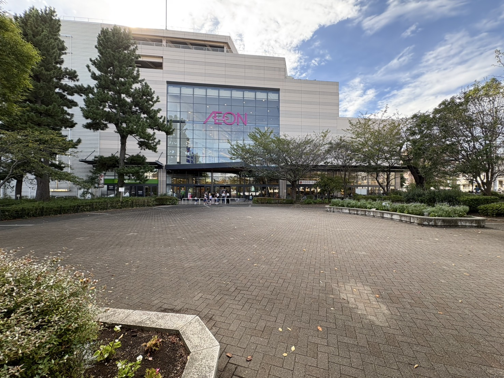
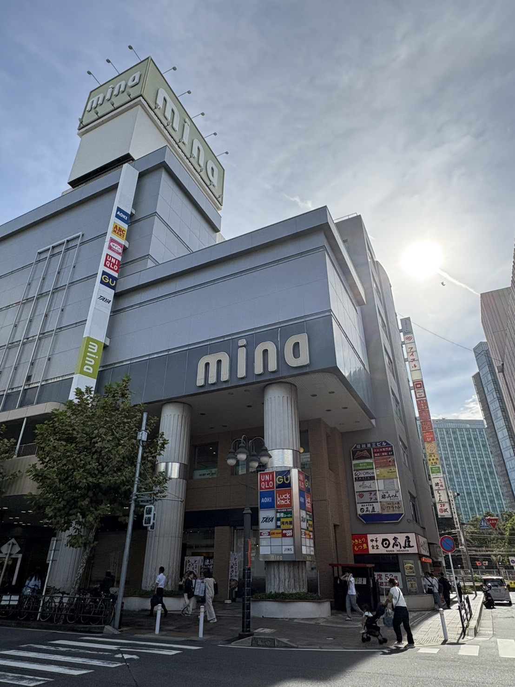
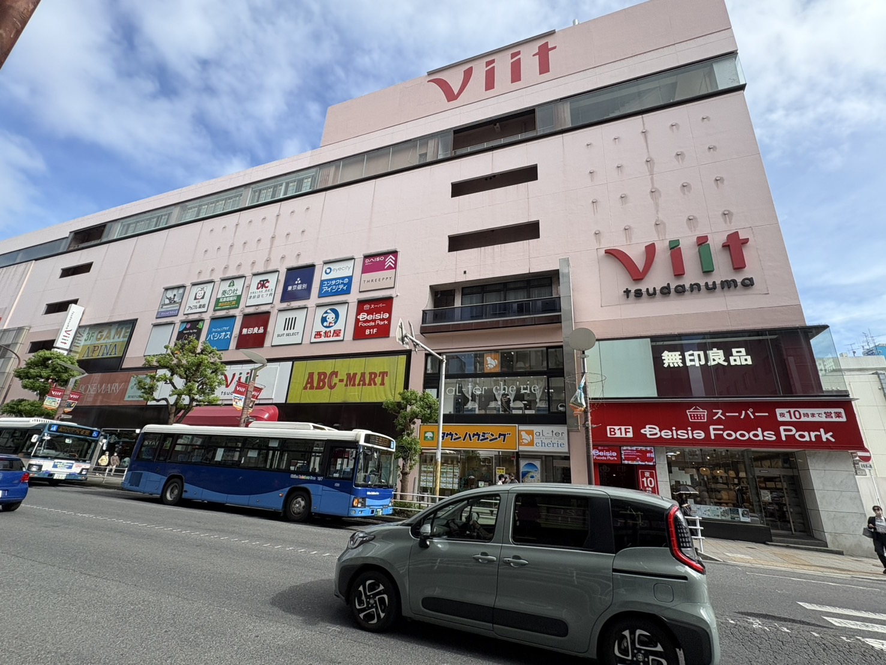
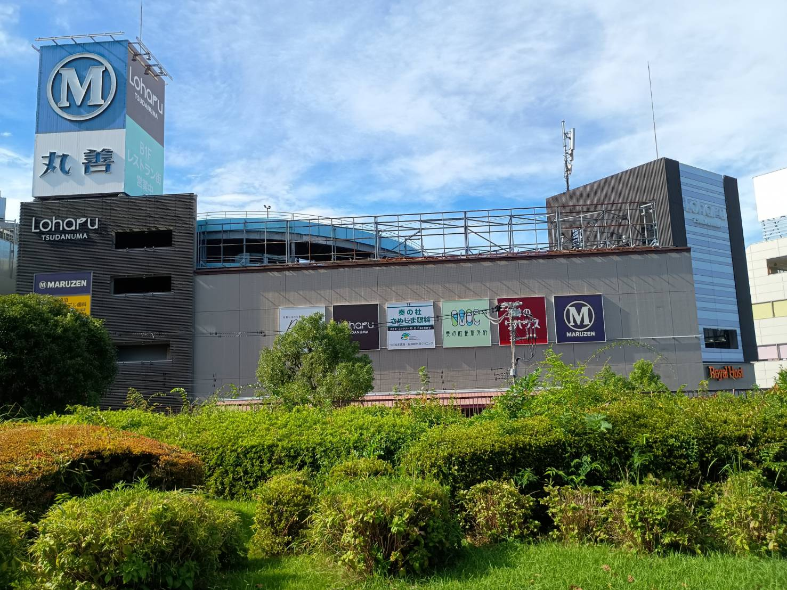
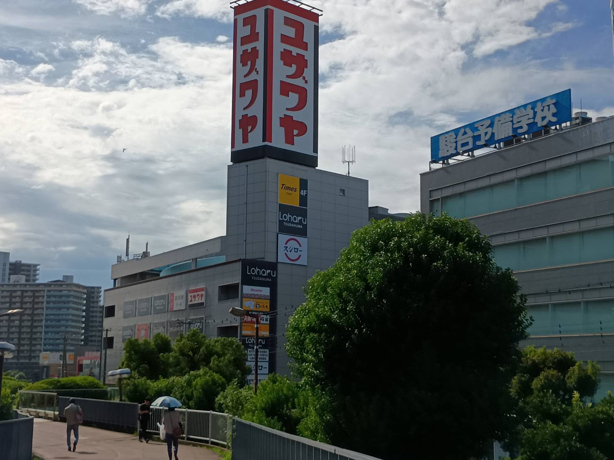

モリシア津田沼
習志野市谷津一丁目１６－１
このWebページは千葉工業大学PM実験用です。
習志野市谷津一丁目１６－１


フジタ工業
日本生命保険 → 野村不動産グループ
１２２
・ダイエーモリシア津田沼 ・TUTAYA津田沼店 ・ヤマダ電機LABI津田沼店
津田沼駅南口前に立地する複合商業施設。 2008年（平成２０年）３月１３日、複合商業施設「サンペディック」の名称変更を含め全面リニューアルした。 JR津田沼駅南口再開発計画により建て替えられることになっており2026年4月から解体工事に着手し2031年の完成。 （事業全体の終了は2023年）
習志野市津田沼一丁目２３－１


2003年（平成15年）10月4日
・日本都市ファンド投資法人（信託受益権）・三井住友信託銀行株式会社（信託受託者）
イオンリテール株式会社（ML）
イオン津田沼店
イオンと約80の専門店
約1300台
2003年10月4日、新京成電鉄新京成線新津田沼駅に隣接する日本初の屋内スキー場「スキーイングイン津田沼」の跡地 （京成電鉄第二工場跡地）に「イオン津田沼ショッピングセンター」の名称で開店。
2011年11月21日に現行の名称（イオンモール津田沼）に改称。 → 2013年11月1日、管理・運営をイオンモール株式会社に移行。 → 2022年2月28日をもってイオンモール株式会社との管理・運営受託業務終了。 → 2022年3月1日より管理・運営がイオンリテール株式会社に移管された。
習志野市津田沼一丁目3番1号

2007年（平成19年）11月9日
新京成電鉄株式会社
株式会社ファーストリテイリング
ユニクロ
丸井津田沼店
津田沼駅北口から徒歩5分。 新京成電鉄が所有するビルの一つで建物の名称は「津田沼14番街ビル」。 丸井津田沼店が2007年（平成19年）2月に閉店した後、改装作業が行われ同年11月9日に開業。
船橋市前原二丁目19番１号

2023年3月16日（プレオープン） 2023年7月1日（第一弾オープン） 2023年秋グランドオープン予定
十字堂ビル
津田沼七番館
東急不動産SCマネジメント
Beisia Foods Park津田沼店
約40店舗
65台
西友津田沼店 → 津田沼パルコ レッツ館 → 津田沼パルコB館
2023年2月28日で営業を終了する津田沼パルコのうちB館建物を使い、同年3月16日に新たな商業施設としてオープンすることになった。。 建物は地下1階～地上6階および屋上となっている。 店名はB館のある地区が1970年代から1989年まで施行していた津田沼駅北口土地区画整理事業時に「第七街区」と呼ばれており、ローマ教字の７を「VII」としそれに 「＋」を加えて「Viit」とした。 津田沼パルコの営業終了後、3月16日からB館で営業する10店舗が営業を再開した。7月1日には旧A館からの移転テナントなど数店がオープンした（第１オープン） Viitとしての全面開業は同年9月の予定でそれまでに約30店舗が加わって約40店舗が入る商業施設となる見通し。
習志野市谷津7-7-1


1998年（平成10年）10月 (ザ・ブロック) → 2017年（平成29年）12月1日 (Laharu津田沼)
ユザワヤ・丸善
60 (2022年時)
175台
津田沼駅南口に立地する地上5階・地下1階の建物 1998年10月にThe Block（ザ・ブロック）として開業。道路を挟んで反対側にはモリシア津田沼（旧・習志野サンペディック）が立地している。開業当初からの主なテナントは 丸善津田沼店、ユザワヤ津田沼店、駿台中学部・高校部・個別教育センター津田沼校など。 過去にはユザワヤはB１F～４Fまで展開していた。 長らく東洋エンジニアリングの所有だったが2015年にゴールドマン・サックスに売却された上、大規模な改装を経て2017年12月1日に現在のLaharu津田沼に改称した。